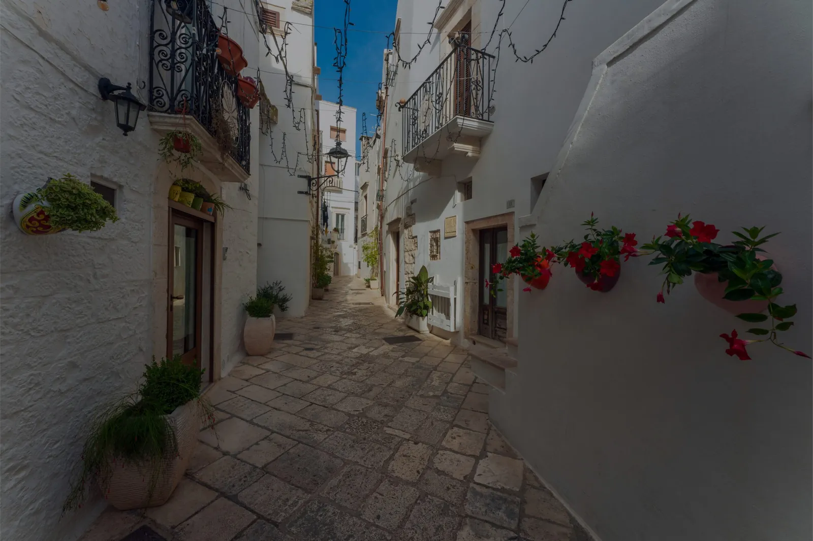
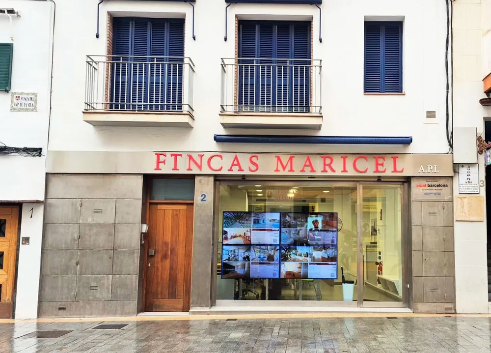

Sobre Nosaltres
HONESTIDAD, CONSTANCIA Y PROFESIONALIDAD
Desde 1979, Fincas Maricel es una inmobiliaria de referencia en Sitges.
Con más de cuatro décadas de trayectoria, nos hemos consolidado como especialistas en el mercado de Sitges y su entorno, combinando un profundo conocimiento local con un servicio cercano, honesto y altamente profesional.
Contamos con presencia destacada en los principales portales inmobiliarios nacionales e internacionales. Valoramos y asesoramos su inmueble con discreción, rigor y la experiencia de más de 45 años.

Son unos grandes profesionales, atentos, eficaces, de trato cercano y lo que es aún más raro encontrar siendo comerciales no son el típico comercial, es decir, no sientes que te quieren vender sí o sí, sino que son sinceros y objetivos. Un placer haber realizado con ellos la operación de compra de vivienda!
Client